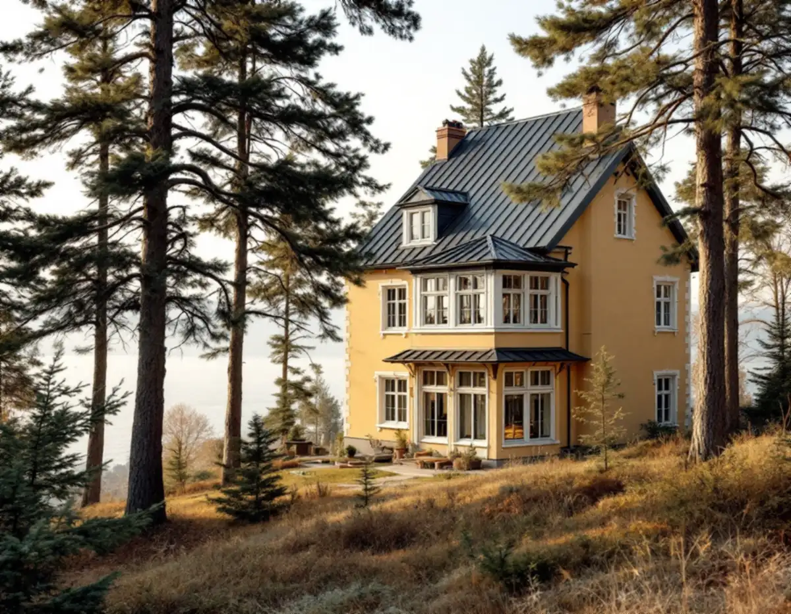
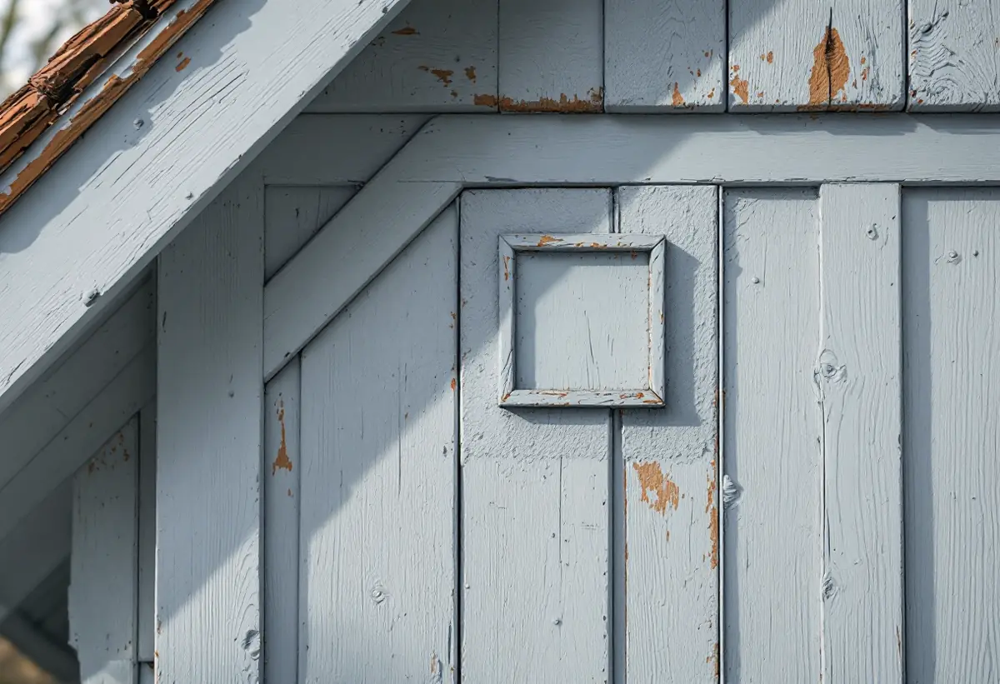

Kartan och planen
Vi tittar i stadens webbkarta och detaljplanen för att se vad som gäller för huset.
Lidingö stad skriver att du kan måla huset i samma färg som i dag utan bygglov. Är huset kulturhistoriskt särskilt värdefullt kan du dessutom söka bidrag för traditionella material och metoder, men då måste planeringen börja långt innan ställningen kommer. Geal Entreprenad AB målar fasader på Lidingö och går igenom med dig vad som gäller för just ditt hus.

Lidingö stad skriver att kulturmiljöprogrammet pekar ut och avgränsar särskilt värdefulla miljöer, inte varje enskild byggnad. Råden i programmet är inte juridiskt bindande, men de är ett stöd när staden handlägger bygglov. Begreppet k-märkt finns inte i juridisk mening. Vanligen menar man att huset är byggnadsminne, att det har skyddsbestämmelser i detaljplan eller områdesbestämmelser, att det är utpekat i programmet eller att det ligger i en utpekad miljö.
För fasadmålningen är skillnaden viktig. Skyddsbestämmelser i en detaljplan kan enligt staden ange särskilda byggnadsdetaljer som ska bevaras eller specifika material och metoder som ska användas, och de betecknas i dag huvudsakligen med q, k och r. Ett byggnadsminne är skyddat genom kulturmiljölagen, och då är det länsstyrelsen som hanterar tillstånd för förändringar. Stadens webbkarta visar om huset ligger i ett utpekat område.

Enligt staden kan du måla i samma färg som i dag utan bygglov. Vill du byta färg helt är det bra att stämma av med miljö- och stadsbyggnadskontoret, eftersom ett kulörbyte kan vara lovpliktigt. Sedan lagändringen krävs inte bygglov för fasadändringar på en- och tvåbostadshus, men i områden eller för byggnader som är särskilt värdefulla krävs fortfarande lov för fasadändring.
Staden föreslår tre frågor när en kulör ska väljas: vilken färg hade huset när det byggdes, vilket år byggdes det, och vilka färger var vanliga på den tiden? Att vara varsam betyder enligt staden bland annat att utgå från husets egna karaktärsdrag, som fasadmaterial och färgsättning, och att underhålla befintliga material hellre än att byta dem. Därför börjar vi med att ta reda på vilken färgtyp som redan sitter på väggen.
Är huset kulturhistoriskt särskilt värdefullt kan du enligt Lidingö stad söka bidrag hos länsstyrelsen. Länsstyrelsen i Stockholms län skriver att bidraget gäller extra kostnader, till exempel när ett särskilt material eller en speciell byggnadsmetod behövs för att bevara det kulturhistoriska värdet. Bara antikvariskt motiverade kostnader räknas, alltså det som traditionella material och metoder kostar jämfört med att göra arbetet på enklast möjliga sätt.
Bidraget kan gälla material, arbete och hyra av byggnadsställning, men inte arbetskostnader som du tänker göra rotavdrag för. Ansökan ska vara inne före den 31 oktober året innan arbetet ska göras, och besked kommer normalt mellan februari och april. Beslutet har oftast ett villkor om antikvarisk medverkan, och överstiger det sökta beloppet 50 000 kronor krävs minst två offerter. Länsstyrelsen kräver också att entreprenören har dokumenterad erfarenhet av kulturhistoriskt värdefull bebyggelse.
Länsstyrelsen råder beställaren att ta fram en arbetsbeskrivning tillsammans med en antikvarie innan offerter begärs in. Riksantikvarieämbetets handbok om byggnadsmåleri förklarar varför: med traditionella färgtyper behöver både bindemedel, pigment och behandlingsmetod preciseras i klartext. Annars är risken stor att utföranden med helt andra egenskaper räknas som likvärdiga. Även antal provstrykningar, referensytor och kulörval ska anges.
Handboken råder också att beskrivningen skrivs först efter studier på platsen, och att man samråder med länsmuseet när huset har högt kulturhistoriskt värde. Om kulörerna i öns villastäder kan du läsa under målare på Lidingö, om att laga puts och tegel under fasadrenovering på Lidingö och om färgtyper under målare.
Vi tittar i stadens webbkarta och detaljplanen för att se vad som gäller för huset.
Vi tar reda på vilken färgtyp och kulör som sitter på fasaden i dag.
Med bidrag behövs ansökan och arbetsbeskrivning i god tid, annars kan rotavdraget användas.
Material, metod, strykningar och ställning redovisas så att de går att jämföra.
Fasaden målas med den färgtyp och metod som har bestämts.
Vi går igenom resultatet och vad som har använts, så att det finns dokumenterat.
Skatteverket ger rotavdrag för att måla och rengöra fasaden på ett småhus och för att sätta upp och ta ner ställningen. Länsstyrelsen ger inget bidrag för arbetskostnader som du gör rotavdrag för, så samma timmar kan inte få både och.
Avdraget är 30 procent av arbetskostnaden, högst 50 000 kr per person och år och högst 75 000 kr tillsammans med rutavdrag. Färg, material och resor ger inget avdrag. Väljer du rotavdrag drar Geal det direkt på fakturan.
Fasadens storlek, vilken färgtyp och metod som ska användas, hur mycket förarbete underlaget kräver och om arbetet ska följas av en antikvarie väger tyngst. Efter ett gratis platsbesök får du ett skriftligt kostnadsförslag.
Fasad, fönster och invändig målning.
Målare i Stockholm →Takbyte, takbesiktning och plåtarbeten.
Takläggare på Lidingö →Brevik, Mölna och Käppala.
Takrenovering på Lidingö →Potten, avloppet och kulturmiljöerna.
Attefallshus på Lidingö →Villastad, källarbadrum och gästhus.
Badrumsrenovering på Lidingö →Villastäder, radhusbyar och berg.
Byggföretag på Lidingö →Radhus, villor och putsfasader på Lidingö.
Fasadrenovering på Lidingö →Villastäderna och Brevik på Lidingö.
Fönsterbyte på Lidingö →Souterrängvillor, radhus och äldre villor på Lidingö.
Golvläggare på Lidingö →Slipa och behandla trägolv i kök och hall.
Golvslipning på Lidingö →Villastäder, souterräng och radhusbyar.
Köksrenovering på Lidingö →Villastäder, radhusbyar och stugor på Lidingö.
Målare på Lidingö →Plåt i vind och värdefulla miljöer.
Plåtslagare på Lidingö →Verandor, trappor och dörrar.
Snickare på Lidingö →Nytt material, k-märkning och byggnadsminnen.
Takbyte på Lidingö →Ny tapet med hänsyn till huset.
Tapetsering på Lidingö →Webbkartan, programmet och frivilligt lov.
Tillbyggnad på Lidingö →Behåll stommen, bygg om resten.
Totalrenovering på Lidingö →